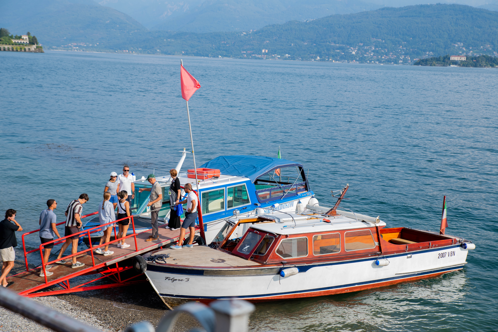

Additional Information
Back to Home
Photography Video
Fun fact #1: My dream job is to be a National Geographic photographer!
Fun fact #2: I was the Spires Photo Specialist in 2022 before I studied abroad in Florence, Italy.
